Pestaña Model: vista general - vistas, explorador y panel
La pestaña Model de un vistazo: seis áreas para un modelo - ver y comprobar, modelar, UV, pesos, pintar texturas y animación - con las mismas vistas, el mismo explorador de escena, el panel de la derecha y la línea de tiempo en cada una. El modelo se dibuja como lo dibuja el juego; el ratón, las teclas y la disposición siguen a 3ds Max o a Blender, según elijas.

Abre un modelo como antes (NPC, .glm, .pk3). La pestaña empieza en Ver/Comprobar (Pestaña Model: ver y comprobar); la fila de áreas sobre las vistas cambia a Modelado (Pestaña Model: modelado y accesorios para el mapa), UV (Pestaña Model: crear UV), Pesos (Pestaña Model: Weights), Pintura (Pestaña Model: pintar texturas) y Animación (Pestaña Model: el panel del área Animación). Las vistas, el explorador de escena y la línea de tiempo (Pestaña Model: la línea de tiempo) son los mismos en cada área, y la pose sigue reproduciéndose mientras trabajas. El modelo se carga en su propio documento con todos los niveles de detalle; un modelo sin cambios da exactamente la misma imagen que antes (comprobado con cada modelo de models/players de Jedi Academy, Jedi Outcast y Movie Duels).
Sin modelo la pestaña ya tiene el mismo aspecto que con uno: el explorador de escena con sus pestañas, búsqueda y filtros (en gris; la indicación y Muéstrame cómo están en el árbol vacío), las vistas con cuadrícula, ViewCube y cabecera, y el panel de comandos con sus pestañas y los grupos del área, cerrados y en gris. En el centro de la vista activa, No hay ningún modelo cargado ofrece Navegador de NPC y Abrir .glm.
Varios modelos en pestañas#
Encima de la vista cada modelo abierto tiene una pestaña con un nombre como kyle/model.glm (carpeta y archivo); la fila aparece en cuanto hay un segundo modelo abierto o superficies en el portapapeles; con un solo modelo la pestaña se ve como antes. Un clic en una pestaña cambia a ese modelo; cada pestaña conserva todo lo de su modelo: archivo, GLA y animación con el fotograma actual, selección, historial de deshacer, pila de modificadores y archivo acompañante, rig y control rig, pintura, línea de tiempo, cámara y vistas. +, Ctrl+O y Abrir en pestaña nueva en el grupo Modelo abren otro modelo en una pestaña nueva: un archivo de modelo o uno de los archivos del juego. Un modelo ya abierto no se abre dos veces: se activa su pestaña. Importar sustituye, como antes, el modelo de la pestaña activa. La x de una pestaña la cierra; con cambios sin guardar se pregunta antes, y al salir pregunta cada modelo con cambios sin guardar. La última pestaña no desaparece, queda vacía. Clic derecho en una pestaña: Cerrar pestaña, Cerrar las demás pestañas.
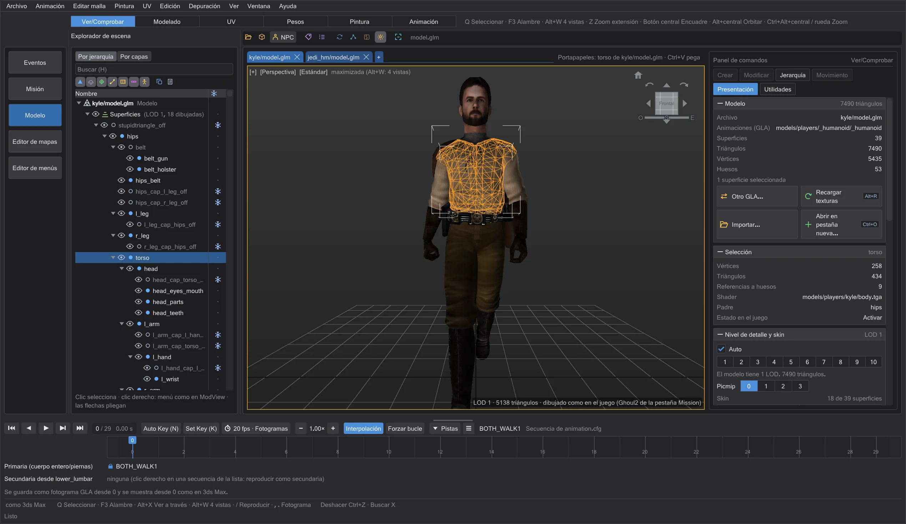
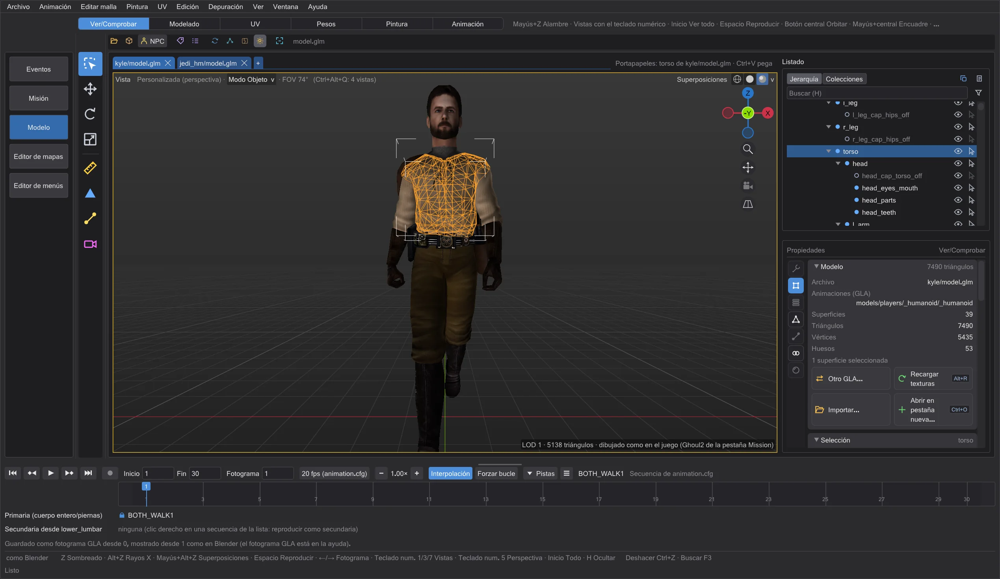
Copiar superficies de un modelo a otro: clic derecho en una superficie del Explorador de escena y Copiar (Ctrl+C copia las superficies seleccionadas). La fila de pestañas muestra a la derecha lo que hay en el portapapeles. En el mismo modelo o en otro, Pegar como hijo de esta en el menú contextual de una superficie (Ctrl+V: bajo la superficie seleccionada) las pega como hijas suyas, en un solo paso de deshacer de ese modelo. Los pesos van a los huesos del mismo nombre; un hueso que el modelo no tiene pasa su peso al hueso padre más cercano que sí tenga; el mensaje los nombra todos, nada se pierde sin aviso. Vienen todos los LOD (los que sobran se omiten, los que faltan se rellenan con el más simple), así como el sombreador que muestra el origen y la pila de modificadores; un nombre que ya existe recibe _1, _2. Se comprueban los límites del juego (vértices por superficie, 32 huesos por superficie, 4 pesos por vértice) y se nombran en el mensaje. En un accesorio .md3 las superficies se pegan rígidas. En el área Animación, Ctrl+C y Ctrl+V copian y pegan la pose, como en Blender.
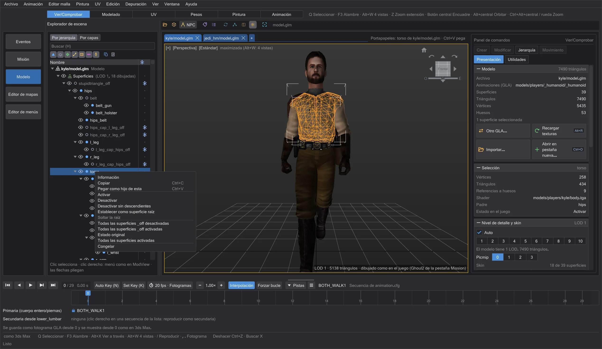
Explorador de escena#
El Explorador de escena muestra las superficies (Por jerarquía o Por capas), los tags y los huesos del esqueleto; Buscar (H) filtra por nombre. Las superficies grises no se dibujan. El clic derecho funciona como en ModView y como en el juego (G2_SetSurfaceOnOff, G2_SetRootSurface): Desactivar oculta la superficie pero mantiene sus hijas, Desactivar sin descendientes oculta toda la rama, Establecer como superficie raíz dibuja solo esa rama, Estado original lo deshace todo. Una línea de skin name,*off apaga una superficie de la misma forma. Los huesos con un punto naranja los busca el código del juego.
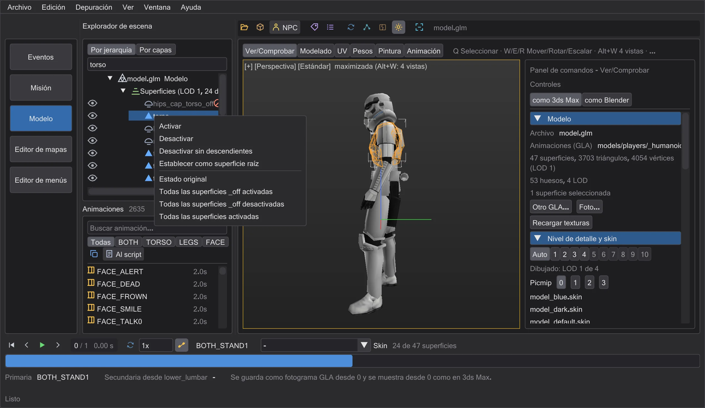
Haz clic derecho en un tag (por ejemplo *r_hand) o un hueso y elige Acoplar modelo para acoplar un modelo de los archivos del juego (un sable, un arma, una cabeza) como G2API_AttachG2Model: en un tag sigue el triángulo del tag, en un hueso sigue el hueso. El grupo Acoplados los muestra y los vuelve a desacoplar.
Un árbol para todo: arriba el modelo, debajo Superficies con su jerarquía, Tags con los modelos acoplados, Huesos como árbol anidado (padre - hijo) y los controles del control rig: el mismo árbol en todas las áreas de la pestaña. Buscar (H) filtra todas las filas por nombre. Como en 3ds Max no hay línea de ayuda bajo el árbol; las indicaciones están en las descripciones emergentes.
Las secuencias en su propia pestaña: la tercera pestaña Secuencias, junto a Por jerarquía y Por capas, lista todas las secuencias del animation.cfg con un campo de búsqueda (parte del nombre, sin distinguir mayúsculas, filtra al escribir; Ctrl+F con el ratón sobre el explorador), el grupo (Todas, BOTH, TORSO, LEGS, FACE) y las columnas nombre, fotogramas y bucle: arrastre el ancho, un clic en la cabecera ordena. Un clic o doble clic reproduce una secuencia, el menú contextual la reproduce como secundaria; la primaria y la secundaria llevan su candado con P y S. Una fila se puede arrastrar a una ranura de la GLA del mapa. En el árbol, una entrada con el número de secuencias salta a esta pestaña.
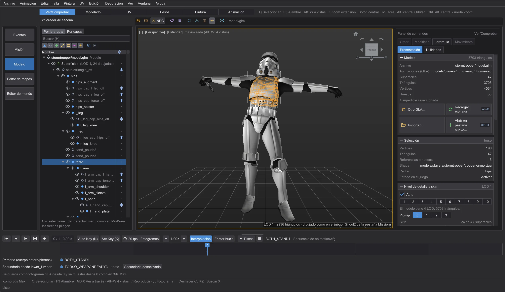
La fila sigue al modo de control. como 3ds Max (explorador de escena): la flecha que pliega, el ojo y el símbolo están justo delante del nombre y cada nivel se sangra un símbolo; la columna Congelado (copo de nieve) congela. Los encabezados de columna se pueden arrastrar en anchura, y un clic en Nombre ordena de forma ascendente, descendente y de vuelta al orden de la jerarquía. La fila de símbolos bajo la búsqueda muestra u oculta tipos de filas (superficies, tapas, tags, huesos, secuencias, modelos acoplados, controles del rig; Ctrl+clic: solo este tipo). como Blender (listado, conmutador Jerarquía / Colecciones): el árbol a la izquierda, el ojo y la flecha «seleccionable» en columnas fijas a la derecha, los tipos en el desplegable Filtro junto a la búsqueda (con Huesos en lista plana y Ordenar alfabéticamente). El árbol nunca se desplaza de lado: los huesos profundos se juntan más, y un nombre que no cabe termina en «...» y aparece entero en la descripción emergente, junto con la información de la fila (vértices, triángulos, shader, padre, estado en el juego; también como Información en el menú del clic derecho). Mayús+clic selecciona todas las superficies desde la última pulsada hasta esta. Delante de una superficie: un punto = activada, un anillo = desactivada, un anillo tachado = desactivada con sus hijas, un ancla detrás del nombre = superficie raíz.
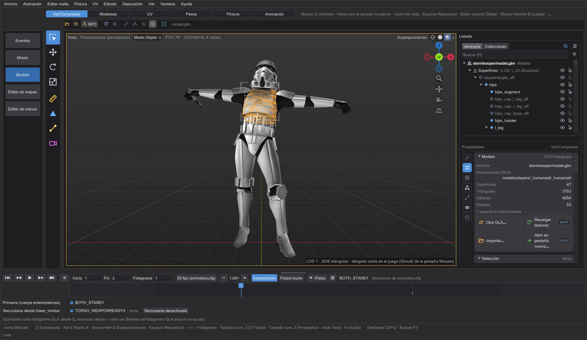
Por capas (como Blender: Colecciones) ordena las mismas filas en capas: Cuerpo, Tapas (_off), Tags, Huesos, Acoples y los demás niveles de detalle (LOD 2, LOD 3 ...). El ojo de una capa oculta todas sus filas solo en la vista; el juego sigue como está: lo que dibuja el juego se sigue cambiando con activar/desactivar las superficies. El copo de nieve (como Blender: la flecha) congela: lo congelado sigue visible, un clic en el árbol lo selecciona solo como 3ds Max (como Blender no), un clic en la vista pasa a través hasta la superficie de detrás (como 3ds Max), el marco de selección lo pasa por alto y, si detrás no hay nada, la línea de estado dice por qué. Las tapas están congeladas desde el principio, para que un clic en la figura nunca elija una tapa. El ojo de una capa LOD muestra ese nivel de detalle. Cada fila tiene los mismos dos interruptores; Ctrl+clic en un ojo muestra solo esa fila, Mayús+clic en el copo de nieve incluye a las hijas.
Filas congeladas en el Explorador de escena (modo 3ds Max): un clic en una fila congelada la selecciona, como en el Scene Explorer de 3ds Max; por ejemplo, para descongelarla con Descongelar selección en el menú contextual de la fila o en «Buscar todas las acciones». En la vista, un clic sigue atravesando una superficie congelada y selecciona la de detrás. En modo Blender, una fila con la flecha «seleccionable» desactivada sigue sin poder seleccionarse, como antes.
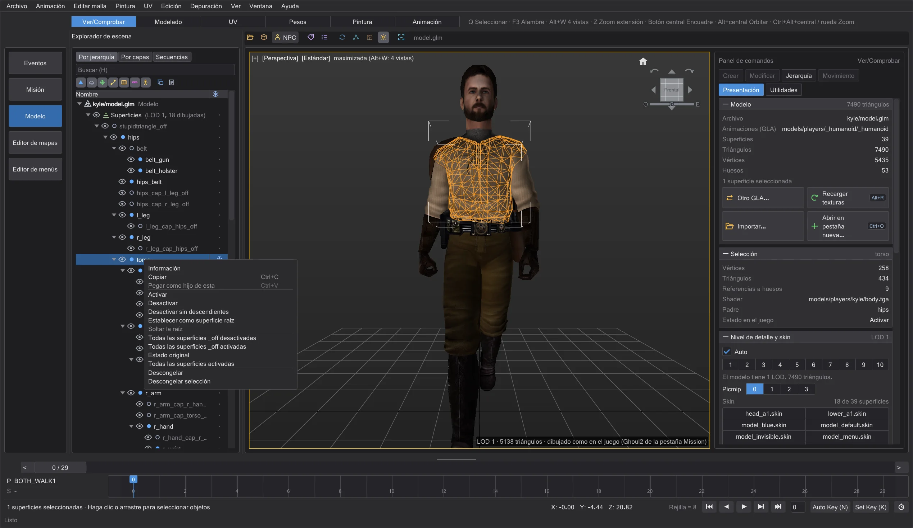
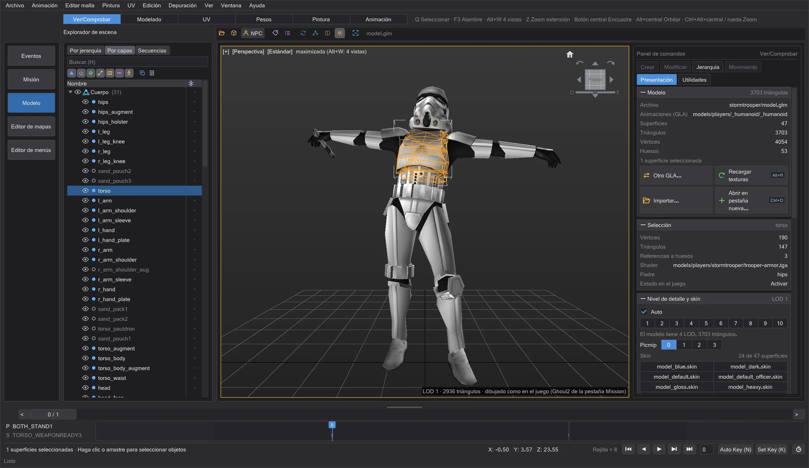
La secuencia secundaria se reproduce en el torso desde lower_lumbar, como SET_ANIM_UPPER en el juego (otro hueso de inicio: clic derecho en un hueso). Interpolación mezcla entre dos fotogramas como el juego.
Cada fila del explorador de escena muestra lo que es: modelo, tag, hueso, hueso raíz, acoplado, control del rig, secuencia; una superficie muestra su estado en el juego (punto = activada, anillo = desactivada, anillo tachado = desactivada con sus hijas). Un clic en el ojo oculta una fila con sus hijos, Ctrl o Alt+clic muestra solo esa; Mostrar todo está en el menú del clic derecho y en la búsqueda de acciones. Las filas ocultas aparecen en gris; seleccionar, pintar y la foto las saltan. Como Blender: H, Alt+H, Mayús+H.
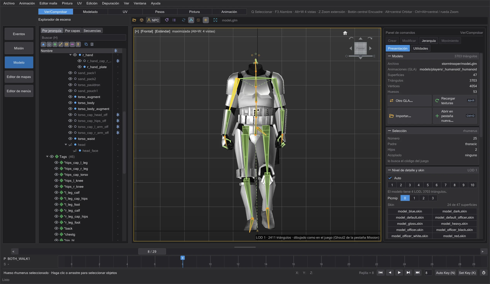
Panel de comandos#
El panel de la derecha sigue el modo de control. como 3ds Max: el Panel de comandos con las pestañas Crear, Modificar, Jerarquía, Movimiento, Presentación y Utilidades y grupos con barras de título planas. como Blender: Propiedades con una columna vertical de símbolos (Herramienta, Objeto, Modificadores, Datos, Hueso, Restricciones, Material; el nombre aparece en la descripción emergente) y paneles redondeados. Cada área de la pestaña elige su pestaña: Ver/Comprobar abre Presentación u Objeto, Animación abre Movimiento o Hueso, y muestra allí todos sus grupos, uno debajo de otro. Las demás pestañas muestran su parte: en Ver/Comprobar, Jerarquía contiene los modelos acoplados y Utilidades la comprobación para el juego. Una pestaña que no tiene nada en el área actual aparece atenuada.
En una ventana pequeña (de menos de unas 50 líneas de texto de alto, por ejemplo con el tamaño más pequeño del programa) las pestañas del Panel de comandos necesitan dos o tres filas como texto. Allí aparecen como 3ds Max como símbolos en una sola fila, como la columna de Propiedades como Blender; el nombre de cada pestaña está en su información emergente. Así el panel conserva el espacio para sus grupos.
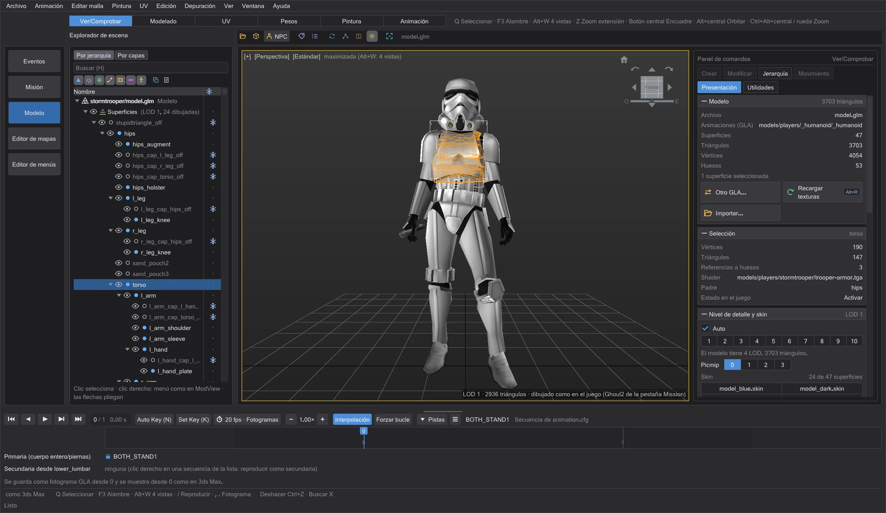
Todos los grupos tienen la misma forma. Un clic en el título pliega el grupo; a la derecha del título hay un dato breve (triángulos, el LOD dibujado, el número de modelos acoplados, los avisos de la comprobación: todo bien en verde o su número en rojo). Los botones están en una cuadrícula de dos columnas de igual ancho, cada uno con un símbolo y, cuando existe, la tecla del modo de control como una pequeña tecla; el botón principal de un grupo se resalta con el color de acento. Los valores aparecen como tabla (nombre a la izquierda, valor a la derecha), una elección como LOD 1-10 o picmip 0-3 como una fila unida, y las indicaciones en un recuadro con símbolo de información. En un panel estrecho no se corta nada: los textos se ajustan y la cuadrícula usa una columna.
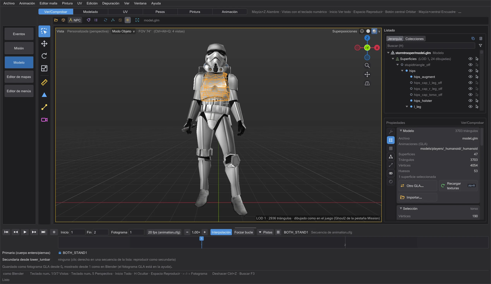
Ancho, áreas y modo de control. Arrastra el borde entre las vistas y el panel para hacerlo más ancho o más estrecho (un doble clic restablece el ancho predeterminado); el programa recuerda el ancho. Las áreas de la pestaña - Ver/Comprobar, Modelado, UV, Pesos, Pintura, Animación - forman una fila de campos de igual ancho a lo largo de toda la pestaña, sobre el explorador, las vistas y el panel; al lado hay una indicación breve con las teclas y la navegación con el ratón del modo de control para esa área. El modo de control se cambia con un clic en como 3ds Max / como Blender a la izquierda de la línea de estado de la pestaña, en el menú de la cabecera de una vista (Controles), en los ajustes o con la búsqueda de todas las acciones.
Cabecera de la vista, ViewCube y gizmo#
Cada vista tiene arriba a la izquierda su cabecera, como los menús de etiqueta de los visores de 3ds Max: cada campo se ilumina bajo el ratón y abre su menú con clic izquierdo o derecho. [+]: Maximizar visor (Alt+W), Encuadrar (Z), lo que muestra la vista (rejilla G, suelo, origen, caja envolvente, corchetes de selección J, estadísticas 7, regla de altura, fondo de un color), el submenú Huesos y comprobaciones (huesos, aletas, normales, tags, buscar grietas, números de vértices y triángulos), ViewCube y el campo de visión. [Perspectiva]: el punto de vista con las teclas de 3ds Max (P, U, T, B, F, L) y Inicio (figura de frente). [Estándar]: el sombreado de esta vista: alambre (F3), caras con aristas (F4), doble cara, texturas blancas, pesos de vértices, silueta. En las cuatro vistas cada una conserva su sombreado, su rejilla y sus estadísticas. El menú contextual de la vista tiene los mismos menús, y Buscar todas las acciones (X) (X) encuentra cada interruptor; su información emergente dice dónde está. Los que necesitan una superficie seleccionada (números, buscar grietas) lo indican en la vista hasta que eliges una.
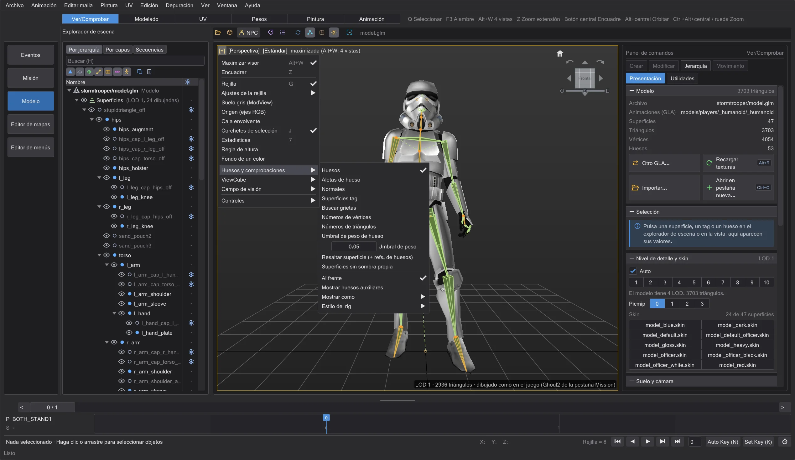
El ViewCube arriba a la derecha de la vista activa muestra desde dónde miras y se comporta como el de 3ds Max. Tiene 26 destinos: 6 caras, 12 aristas y 8 esquinas; el que está bajo el ratón se ilumina y un clic gira la vista hacia él con una animación corta. La proyección se mantiene: una perspectiva sigue en perspectiva; en una vista ortográfica una cara da su vista (Frontal, Superior ...) y una arista o esquina la vista libre Ortográfica. Arrastrar el cubo orbita. El anillo de brújula de debajo lleva N, E, S y O: arrastrar el anillo gira solo sobre el eje vertical y un clic en una letra mira desde ahí. Mirando de frente a una cara, cuatro flechas llevan a las caras vecinas y dos flechas curvas giran la vista 90 grados. La casa de arriba a la izquierda es Inicio: la cámara vuela a la figura de frente y centrada. El clic derecho ofrece Inicio, Establecer la vista actual como Inicio y Ortográfica. La vista fijada como Inicio se conserva con la figura: JK Studio la recuerda para cada figura, también tras reiniciar. Restablecer Inicio vuelve a hacer de la vista inicial el Inicio. El cubo es semitransparente hasta que el ratón está encima. Una figura mira hacia -Y en su .glm (el juego la gira hacia +X), por eso Frontal muestra su cara, también al cargar una figura, tras Alt+W y al restablecer la vista; como en 3ds Max, el norte queda detrás de la cara Frontal. [+] > ViewCube desactiva el cubo o la brújula, muestra el cubo en las cuatro vistas y ajusta el Ángulo del norte.
El ViewCube oculta lo que hay detrás: las letras de la brújula detrás del cubo quedan tapadas y no se pueden pulsar, un clic en una cara, arista o esquina visible siempre tiene prioridad sobre el anillo, y la vista gira suavemente sin oscilar. Todas las etiquetas sobre la vista (cabecera, Inicio, ViewCube con brújula, indicaciones y medidas) se vuelven blancas o negras según el brillo del fondo y se leen sobre la silueta, el blanco o cualquier color. En el nivel de objeto el modelo se sombrea sin malla de alambre, como en 3ds Max y Blender; las aristas aparecen en los subniveles de objeto (como en el modo Edición de Blender, finas y oscuras). Los fantasmas solo se dibujan en el área Animación; su interruptor también está en el menú [+] de la vista.

En modo Blender la cabecera está organizada como la vista 3D de Blender: a la izquierda el menú Vista (encuadrar selección, encuadrar todo, perspectiva/ortográfica, Punto de vista con las teclas del teclado numérico, Navegación con orbitar, girar y el lado opuesto, vista cuádruple), a la derecha Superposiciones y los tres botones de Sombreado de la vista (alambre, sólido, vista previa del material) con el desplegable para caras traseras y silueta. Debajo está el gizmo de navegación: un clic en un eje mira a lo largo de él, un segundo clic desde el lado opuesto, arrastrar orbita (una vista de eje pasa a perspectiva, como la perspectiva automática de Blender); debajo zoom, mover, la vista de cámara (atenuada: la pestaña Modelo no tiene cámara de escena) y perspectiva/ortográfica. El teclado numérico funciona como en Blender: 4/6/8/2 orbitan 15 grados, Mayús+4/6 giran, 9 el lado opuesto, Ctrl+1/3/7 atrás, izquierda e inferior, Mayús+Z alambre, Ctrl+` el gizmo.

El ViewCube deriva de WhiteoutDex (max_viewcube.h, licencia BSD 3-Clause, Copyright (c) 2026 WhiteoutDex Contributors) y de WhiteoutFlakes (licencia BSD 3-Clause con aviso de obras derivadas por IA, Copyright (c) 2026 Fernando Sahmkow); el gizmo de navegación lo dibuja JK Studio: sin gráficos de Autodesk ni de Blender.
Rejilla del suelo#
Cada vista muestra de serie una rejilla como la rejilla de inicio de 3ds Max: líneas finas a la distancia de la rejilla, líneas principales más oscuras y los ejes del mundo en negro. En perspectiva está sobre el suelo y termina tras 7 líneas (Max: Perspective View Grid Extent); en las vistas Superior, Frontal, Izquierda ... está en el plano de la vista, llena toda la vista y cambia con el zoom: al alejarte, las líneas principales pasan a ser las nuevas líneas; al acercarte nunca es más fina que la separación, como en Max. La figura tapa la rejilla. [+] > Rejilla (G) la activa en esta vista. [+] > Ajustes de la rejilla ajusta Separación de la rejilla (8 unidades de JKA, como la rejilla del editor de mapas), Líneas principales cada N líneas (8: una línea principal cada 64 unidades, la altura de un jugador), Extensión de la rejilla en perspectiva y la Altura del suelo: por defecto -24, los pies de una figura de JKA. 3ds Max y Blender ponen su rejilla en Z = 0, pero una figura de JKA tiene su origen en la cadera. Punto más bajo pone el suelo bajo el punto más bajo de la figura en su pose (accesorios con el origen en el suelo: 0). Separación y líneas principales también están en los ajustes (Pestaña Model: rejilla). El suelo gris de ModView (Suelo gris (ModView)) sigue siendo un interruptor propio y se puede mostrar junto con la rejilla.
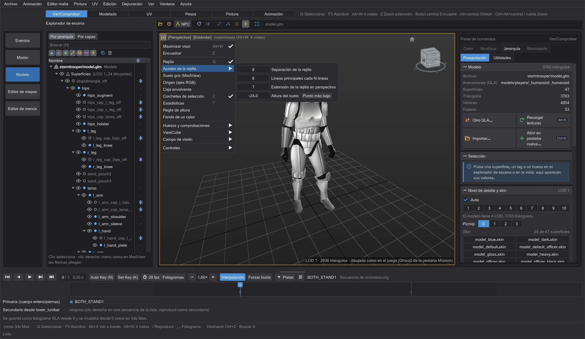

En modo Blender la rejilla se ve y se comporta como las superposiciones de Blender: el suelo se desvanece hacia el horizonte y parece infinito, el eje X es rojo y el eje Y verde (Z azul si lo activas); en las vistas laterales las subdivisiones cambian con el zoom. Superposiciones > Guías tiene Rejilla (las vistas laterales), Suelo (perspectiva), Ejes X Y Z, Escala y Subdivisiones; cada vista conserva sus propios interruptores; escala y subdivisiones son la separación y las líneas principales de arriba.

Navegar por las vistas#
El ratón y las teclas mueven una vista exactamente como en el programa cuyo modo está elegido (Ajustes > Pestaña Modelo > Controles): como 3ds Max o como Blender. La línea sobre las vistas nombra lo más importante; cada orden está también en el menú de la cabecera de la vista ([nombre de la vista] > Navegación, en modo Blender View > Navegación), en el menú contextual y en la búsqueda (X / F3). El encuadre mueve la escena exactamente con el ratón; el zoom y la órbita mantienen el punto del centro de la vista.
Como 3ds Max
| Ratón / tecla | Qué hace |
|---|---|
| botón central | Encuadre: la vista sigue al ratón. Con Mayús solo en la dirección en la que se mueve primero. |
| Alt+botón central | Orbitar alrededor del punto elegido en Navegación > Orbitar alrededor de (de fábrica la selección; sin ella, el centro de la vista). Una vista Superior, Frontal, Izquierda ... pasa a ser la vista libre Ortográfica. Con Mayús solo sobre el eje que se usa primero. |
| Ctrl+Alt+botón central | Zoom: arriba acerca, abajo aleja. |
| rueda, [ ], Ctrl+= Ctrl+- | Zoom por pasos sobre el punto bajo el ratón (Zoom sobre el punto del ratón (ortográfica) / Zoom sobre el punto del ratón (perspectiva); desactivado: sobre el centro de la vista). |
| Z, Ctrl+Alt+Z | Encuadrar: Z ajusta la selección (sin ella, toda la figura) en todas las vistas, Ctrl+Alt+Z toda la figura en la vista activa, Ctrl+Mayús+Z toda la figura en todas las vistas (Encuadrar todo en todas las vistas (Ctrl+Mayús+Z)), como en 3ds Max; allí Rehacer es Ctrl+Y. En el modo como Blender, Ctrl+Mayús+Z sigue siendo Rehacer. |
| Ctrl+Alt+Mayús+Z, Alt+Mayús+Z | El doble de cerca / el doble de lejos. |
| Alt+Z, Ctrl+P, Ctrl+R, Ctrl+W | Modos de navegación como los botones de abajo a la derecha de 3ds Max - Zoom, Encuadre, Orbitar, Zoom de región: arrastra con el botón izquierdo; el nombre del modo aparece abajo en la vista; clic derecho o Esc lo termina. Orbitar muestra el círculo amarillo: dentro la vista gira libre, en uno de los cuatro tiradores solo sobre un eje, fuera gira sobre sí misma. Zoom de región: el rectángulo arrastrado llena después la vista. |
| I | Encuadre hacia el puntero: el punto bajo el ratón pasa al centro de la vista. |
| Mayús+Z, Mayús+Y | Deshacer / rehacer el último cambio de la vista activa (encuadre, zoom, giro, ViewCube): un historial propio de cada vista, independiente de Ctrl+Z. |
| T B F L P U, V | Vistas Superior, Inferior, Frontal, Izquierda, Perspectiva, Ortográfica; V abre el menú de todas las vistas en el puntero. |
| Alt+W, Alt+Inicio, Ctrl+Alt+V | Una vista o cuatro; vista de inicio (Inicio del ViewCube); mostrar u ocultar el ViewCube. |
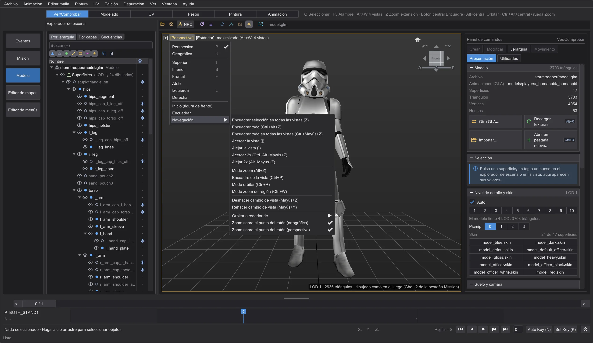
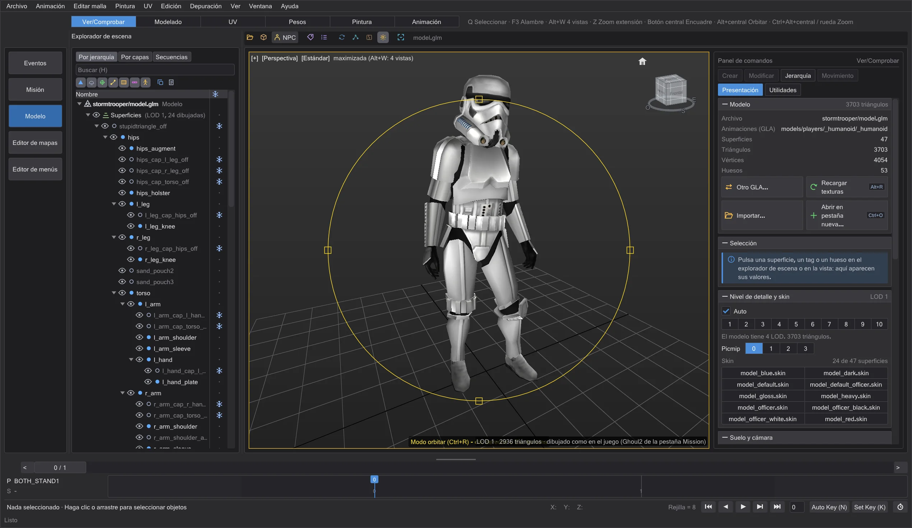
Como Blender
| Ratón / tecla | Qué hace |
|---|---|
| botón central | Orbitar (plato giratorio): izquierda y derecha sobre el eje vertical, arriba y abajo por encima de la figura, también pasando por el polo. Una vista Frontal, Derecha, Superior ... pasa a perspectiva (Auto Perspective). Mantén Alt al arrastrar para ajustarte a las vistas de los ejes y diagonales. |
| Mayús+botón central | Encuadre: la vista sigue al ratón. |
| Ctrl+botón central | Zoom arrastrando arriba y abajo (el zoom Dolly de Blender). |
| rueda, Numpad + Numpad -, Ctrl+= Ctrl+- | Zoom por pasos: un paso divide o multiplica la distancia por 1,2, sobre el centro de la vista (Zoom hacia la posición del ratón activado: hacia el ratón). |
| Alt+botón central | Arrastrar gira la vista un cuarto de vuelta hasta la vista de eje vecina (derecha, izquierda, arriba, abajo); un clic lleva el punto de la figura bajo el ratón al centro de la vista. |
| Numpad 1 Numpad 3 Numpad 7, Numpad 5, Numpad 9 | Frontal, Derecha, Superior (con Ctrl el lado opuesto), ortográficas y con giro suave; Numpad 5 cambia entre perspectiva y ortográfica en la misma dirección; Numpad 9 el lado opuesto. |
| Numpad 4 Numpad 6 Numpad 8 Numpad 2 | Orbitar en pasos de 15 grados (4 y 6: la cámara va a izquierda y derecha, 8 y 2: arriba y abajo); con Mayús 4 y 6 giran la vista sobre sí misma, con Ctrl las cuatro teclas la encuadran. |
| Numpad ., Inicio, Mayús+C | Encuadrar selección (sin selección no ocurre nada), Encuadrar todo y Encuadrar todo incluido el origen. La dirección se mantiene. |
| `, Mayús+B, Ctrl+Alt+Q | El menú circular Vista en el puntero (Izquierda, Derecha, Inferior, Superior, Frontal, Trasera, Encuadrar selección); Zoom de región: arrastra un rectángulo que luego llena la vista; la vista cuádruple con Superior, la perspectiva, Frontal y Derecha. |
| Gizmo | El gizmo arriba a la derecha: clic en un eje para su vista (mirando justo a lo largo de un eje, el centro da el lado opuesto), arrástralo para orbitar; los botones de debajo hacen zoom y encuadre arrastrando y cambian entre perspectiva y ortográfica. |
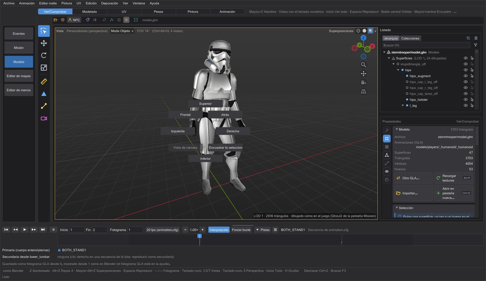
En Navegación están también los ajustes: como 3ds Max Orbitar alrededor de (Centro de la vista (Orbit), Selección (Orbit Selected), Selección de subobjetos (Orbit SubObject), Punto bajo el ratón (Orbit Point of Interest)) y los dos interruptores Zoom sobre el punto del ratón (ortográfica) / Zoom sobre el punto del ratón (perspectiva); como Blender Orbitar alrededor de la selección y Zoom hacia la posición del ratón (ambos desactivados de fábrica, como en Blender). No incluidos: los SteeringWheels y el modo de recorrido de 3ds Max, la navegación Caminar/Volar y la órbita trackball de Blender, las vistas de cámara.